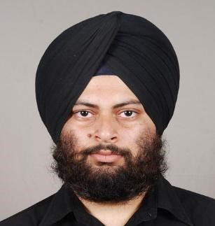

I am an outgoing and energetic IT professional, seeking a
career that fits my professional skills and personality to utilize my technical and management skills for the growth of the organization as well as to enhance my knowledge about new and emerging trends in the IT sector. Seeking assignments in Development and Production Support to maximize my 8 years of management and analytic experience. Currently working at Client location Belfast, United Kingdom.
- Experience
-
Infosys LimitedTechnology Lead - Chandigarh, India - 2012-Till date
8 years of experience in analysis, design, development of various J2EE applications.
Worked as a developer and Team Lead at offshore. Worked in one insurance project and currently working in a banking project.
Currently working on various automation related projects using Java, Unix shell scripting and Python in AppDynamics and Kubernetes(Docker) technologies.
Jarc InfoTechTrainee - Mohali, India - 2010
Development of Etraining Guru website using ASP.NET 3.5 with MSSQL 2008 at the backend. Complete implementation of DB module and three role architecture of the project.
- Projects
-
AppDynamics/EAM/RTView
Client: Citigroup USA Duration: Apr 2014 – Till date (6 Years, 3 Months)
Roles and Responsibility:
- Worked as Technology Lead to Enable Automation in manual routine work using Java, shell scripting and Python.
- Helped team to minimize the manual work by developing tools for the monotonous manual tasks in Java, Shell and Python.
- Automated maximum Management Reports and eliminated total manual interference.
- Worked in the capacity of offshore and onshore lead and was responsible for the deliverables.
- Client handling for new requirements and for deliverable updates.
- Mentoring and enabling the team for proper functioning and process adherence.
- Managed Incident and problem management tickets for the team.
- Ticket dispatch to ensure overall smooth delivery of client deliverables with SLA adherence.
- Involved with day-to-day project issues discussions, interact with team members
- Customization of dashboards as per client requirements.
-
AllState Motorhome B3, Vagen
Client: All State Insurance USA Duration: Jul 2012 - Apr 2014 (1 Years, 9 Months)
Roles and Responsibility:
- Requirements elicitation and translation to technical specifications.
- Fixing and testing of the procedural handling of automated steps in the service request processing.
- Test Plan creation and execution.
- Coding of J-units for automation of unit testing.
- Resolving the issues for various bugs and build problems.
- Help implementation using Team Site CMS.
- Analyzing the QTP issues.
- Support implementation of design by resolving complex technical issues faced by the IT project team during development, deployment and support.
- Root Cause Analysis of the defects.
- Industrial Exposure
-
- 8+ years of industrial exposure for development of Enterprise level applications and production support as well.
- Worked for big clients in banking and insurance domain based on USA.
- Currently working on various automation related projects using Java, Unix shell scripting and Python in AppDynamics and Kubernetes(Docker) technologies.
- Top Skills
-
- Programming: Java Core and Advanced, JSP, Python, Java Multithreading, RESTful API development
- Framework: Struts, Spring
- Scripting: Unix Shell Scripting, Python, JavaScript, Basics of AngularJS
- Database: RDBMS, MongoDB
- DevOps: Git, SonarQube, Maven, CI/CD, Basics of Docker and Kubernetes
- Ticketing Tool: Service Now
- IDE Tools Worked on: RAD (Rational Application Development by IBM), NetBeans and Eclipse
- Operating System: Windows, Red Hat Enterprise Linux 5/6/7.X
- Others: AppDynamics, ELK, JSON, MS Excel, MSWord
- Education
-
MBA (HR): Panjab University Chandigarh, Master of Business Administration (HR) with First Division (2015)
Bachelor of Technology (CSE): Punjab Technical University, Bachelor of Technology in Computer Science & Engineering with 74% (With Distinction) (2011)
Senior Secondary: Punjab School Education Board, Mathematics and Science with 75% (With Distinction) (2006)
Secondary Education: Punjab School Education Board, Matriculation with 83% (With Distinction) (2004)
- Professional Achievements And Awards
-
- Infosys Global Agile Developer Certified.
- Infosys Kanban Certified
- Infosys Java Certified Engineer.
- Won On the Spot Award for Best Performer in the team for f years. (Infosys).
- Brain bench Unix Administration(General) Certified (Highest Scorer of the account 4.32/5)
- Rating Outstanding for last Seven Years (Highest Performance)
- Multiple Client Appreciations.
- Microsoft Certified HTML5, CSS3 and JS.
- Published various Technical and non-technical Documents within Infosys.
- Extra-Curricular Activities
-
- Won 1st Prize at State Level in Counter Strike Competition held at SBSCET Ferozepur.
- Semi- Finalist at Tech Fest in Counter Strike Competition held at DAVIET Jalandhar.
- Held position of General Secretary in Stream level committee at College.
- Organized various Tech Fest during tenure of B. Tech
- Personal Strengths
-
- Good communication skills.
- Very good team player and team leader
- Analytical Ability
- Problem solving skills
- Curiosity to learn new technologies
- Interests & Hobbies
-
- Playing outdoor games like Cricket, Kabaddi etc.
- Computer games specifically First Person Shooter and Strategy based Games.
- Reading science and technology related articles online.
- Coding is also a kind of hobby for me as I enjoy working with Programming languages.
- Languages
-
- English: Advanced Reading and Writing
- Punjabi: Advanced Reading and Writing
- Hindi: Advanced Reading and Writing
- Personal Profile
-
- Date of Birth: 15th March, 1989
- Marital Status: Married
- Nationality: Indian
- Current Location: Belfast, United Kingdom
- Current Visa Type: ICT Tier-2 UK